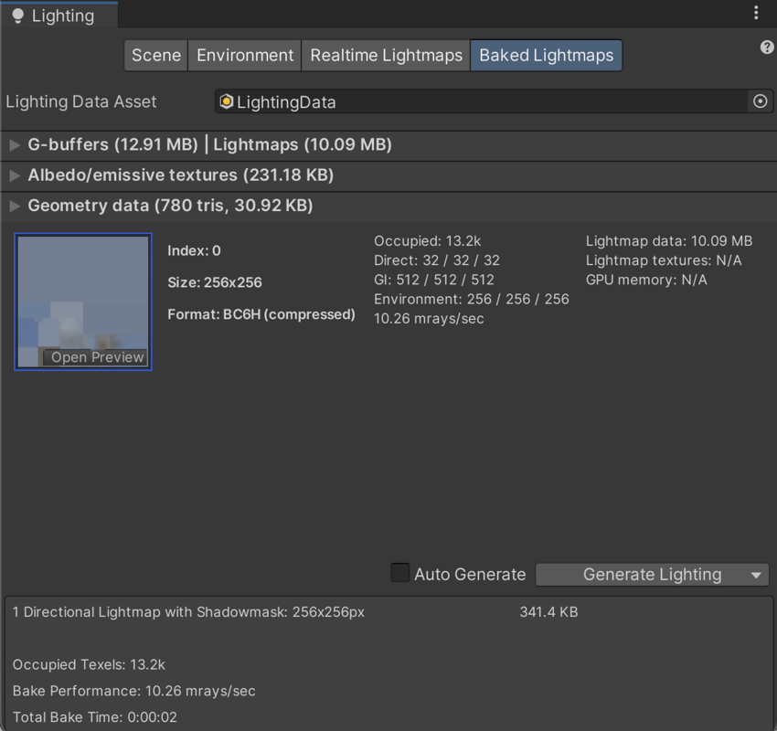
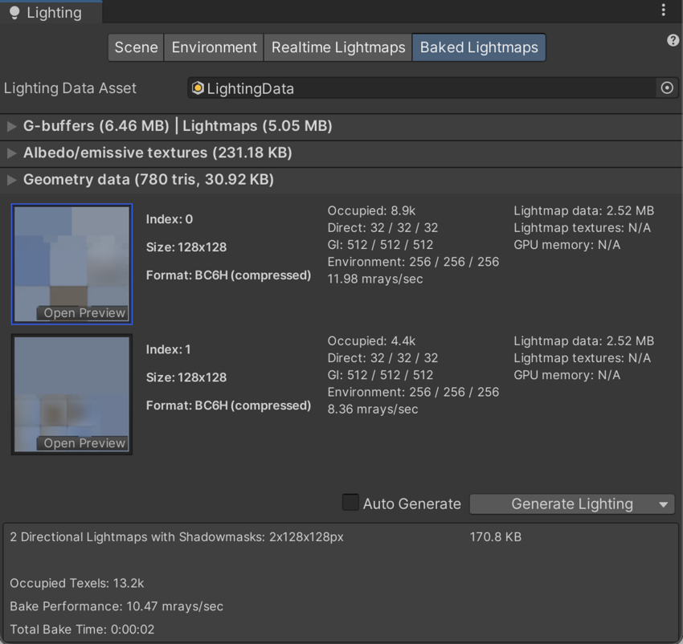

光照贴图参数资源
光照贴图参数资源中包含了一组用于控制 Unity 光照功能的参数值。这些资源允许定义和保存不同的光照值集合，以便用于不同的情况。
光照贴图参数资源可以用来为不同类型的游戏对象或为不同平台和不同场景类型（例如，室内或室外场景）创建优化的预设。
创建光照贴图参数资源
要创建新的光照贴图参数资源，请在 Project 窗口中右键单击，然后选择 Create > New Parameters Asset。Unity 将此资源存储在 Project 文件夹中。
属性
在 Project 窗口中单击某个光照贴图参数资源时，Inspector 窗口将显示该资源中定义的值。下表中列出了参数及其描述。
Realtime GI
These parameters configure Realtime Global Illumination using Enlighten. Realtime Global Illumination isn’t supported in the High Defintion Render Pipeline (HDRP) or the Universal Render Pipeline (URP).
See the HDRP and URP documentation for compatibility information specific to scriptable render pipelines. Unless otherwise specified, the Built-In Render Pipeline supports all features described in this article.
| 属性 | 功能 |
|---|---|
| Resolution | 该值在 Lighting 窗口的 Scene 选项卡中缩放 Realtime Resolution 值（菜单：__Window__ > Rendering > Lighting Settings > Scene__）以提供光照贴图的最终分辨率（纹理像素/距离单位）。 | | Cluster Resolution| 聚类分辨率（内部计算光反射的分辨率）与最终光照贴图分辨率的比率。请参阅有关 Scene 视图中的 GI 可视化的文档以了解更多信息。 | | Irradiance Budget| 此值确定用于照射光照贴图中每个纹理像素的入射光数据的精度。从纹理像素的位置对场景的“视图”采样来获得每个纹理像素的光照。较低的辐照度预算值会导致样本更模糊。值越高，样本的清晰度越高。较高的辐照度预算会改善光照，但这会增大运行时内存使用量并可能增大 CPU 使用率。 | | Irradiance Quality| Use the slider to define the number of rays that are cast and used to compute which clusters affect a given output lightmap texel. Higher values offer visual improvements in the lightmap, but increase precomputing time in the Unity Editor. The value doesn’t affect runtime performance. | | Modelling Tolerance| 此值控制网格几何体中允许光线通过的间隙的最小大小。降低此值可允许光线穿过环境中更小的间隙。 | | Edge Stitching| 如果启用此属性，则表示光照贴图中的 UV 图表应无缝连接在一起，从而避免不必要的视觉瑕疵。 | | Is Transparent| If enabled, the object appears transparent during the Global Illumination calculations. Back-faces don’t contribute to these calculations, and light travels through the surface. This is useful for invisible emissive surfaces. | | System Tag| A group of objects whose lightmap Textures are combined in the same lightmap atlas is known as a “system”. The Unity Editor automatically defines additional systems and their accompanying atlases if all the objects can’t be fitted into a single atlas. However, it’s sometimes useful to define separate systems yourself (for example, to ensure that objects inside different rooms are grouped into one system per room). Change the System Tag__ number to force new system and lightmap creation. The exact numeric sequence values of the tag aren’t significant. |
Baked GI
这些参数用于配置光照贴图。
| 属性 | 功能 | |
|---|---|---|
| Enlighten | 渐进光照贴图 (Progressive Lightmapper) | |
| Blur Radius | The radius of the blur filter that’s applied to direct lighting during post-processing in texels. The radius is essentially the distance over which neighboring texels are averaged out. A larger radius gives a more blurred effect. Higher levels of blur tend to reduce visual artifacts but also soften the edges of shadows. | Blur Radius isn’t available when you use Progressive Lightmapper. |
| Anti-aliasing Samples | The degree of anti-aliasing (the reduction of “blocky” artifacts) that’s applied. Higher numbers increase quality and bake time. | 对纹理像素进行超级采样以减少锯齿的次数。采样次数为 [1;3] 将禁用超级采样，采样次数为 [4;8] 将提供 2x 超级采样，而采样次数为 [9;256] 提供 4x 超级采样。此设置主要影响用于位置和法线缓冲区的内存量（2x 使用 4 倍的内存量，4x 使用 16 倍的内存量）。 |
| Direct Light Quality | 用于评估直接光照的光线数量。较高数量的光线往往会产生更准确的柔和阴影，但会增加烘焙时间。 | Direct Light Quality isn’t available when you use Progressive Lightmapper. |
| Backface Tolerance | The structure of a Mesh sometimes causes some texels to have a “view” that includes back-facing geometry. Incoming light from a back-face is meaningless in any Scene. Because of this, this property lets you select a percentage threshold of light that must come from front-facing geometry in order for a texel to be considered valid. Invalid texels have their lighting approximated from their neighbors’ values. Lowering this value can solve lighting problems caused by incoming light from backfaces. | The percentage of rays shot from an output texel that must hit front faces to be considered usable. Allows a texel to be invalidated if too many of the rays cast from it hit backfaces (the texel is inside some geometry). In that case artefacts are avoided by cloning valid values from surrounding texels. For example, if back-face tolerance is 0.0, the texel is rejected only if it sees nothing but backfaces. If it’s 1.0, the ray origin is rejected if it has even one ray that hits a back-face. In the Baked Texel Validity scene view mode one case see valid (green) and invalid (red) texels. If you have a single sided mesh in your scene, you may want to disable this feature by setting it to zero. A two-sided flag will later be added in the editor to address this. |
| Pushoff | The distance to push away from the surface geometry before starting to trace rays in modelling units. It’s applied to all baked lightmaps, so it affects direct light, indirect light, and AO. Pushoff is useful for getting rid of unwanted AO or shadowing. Use this setting to solve problems where the surface of an object is shadowing itself, causing speckled shadow patterns to appear on the surface with no apparent source. You can also use this setting to remove unwanted artifacts on huge objects, where floating point precision isn’t high enough to accurately ray-trace fine detail. | The amount to push off ray origins away from geometry along the normal for ray tracing, in modelling units. It’s applied to all baked lightmaps, so it affects direct light, indirect light and baked ambient occlusion. It’s useful for getting rid of unwanted occlusion/shadowing. |
| Baked Tag | Similar to the System Tag property above, this number lets you group specific sets of objects together in separate baked lightmaps. As with the System Tag, the exact numeric value isn’t significant. Objects with different Baked Tag values are never put in the same atlas; however, there is no guarantee that objects with the same tag end up in the same atlas, because those objects might not necessarily fit into one lightmap (see image A, below, for an example of this). You don’t have to set this when using the multi-scene bake API, because grouping is done automatically (use the Baked Tag to replicate some of the behavior of the Lock Atlas option). See Baked Tags: Details, below, for more information. | |
| Limit Lightmap Count | Limit Lightmap Count isn’t available when you use Enlighten. | 在将具有相同 Baked Global Illumination 设置的游戏对象进行打包时，Limit Lightmap Count 会限制 Unity 可以使用的最大光照贴图数量。启用 Limit Lightmap Count 时，下方会显示一个名为 Max Lightmaps 的设置；使用此设置可以设置 Unity 可以使用的最大光照贴图数量。 如果多个游戏对象的 Anti-aliasing Samples、Pushoff、Baked Tag 和 Backface Tolerance 具有相同的值，则 Unity 会认为这些游戏对象具有相同的 Baked Global Illumination 设置。这意味着 Unity 可以将与不同光照贴图参数资源关联的游戏对象打包在一起。为了打包游戏对象，Unity 会逐渐缩小 UV 布局，直到所有游戏对象都纳入到指定数量的光照贴图中为止。Lightmapper Settings 可以定义这些光照贴图的大小。此过程可能会降低游戏对象的光照贴图分辨率。 |
烘焙标签 (Baked Tags)：详细信息
 
The two images above shows two views of the same Scene:
Top: Everything is in one atlas because all the GameObjects have the same Baked Tag.
Bottom: One GameObject is assigned a different Baked Tag, and forced into a second lightmap.
Baked AO
这些参数用于配置烘焙环境光遮挡。
| 属性 | 功能 |
|---|---|
| Quality | 评估烘焙环境光遮挡 (AO) 时投射的射线数量。射线数量越多，AO 质量越高，但烘焙时间也越长。 |
| Anti-aliasing Samples | The number of samples to take when doing antialiasing of AO. A higher number of samples increases the AO quality but also increases the bake time. |
General GI
| 属性 | 功能 |
|---|---|
| Backface Tolerance | The percentage of rays shot from an output texel that must hit front faces for the lighting system to consider them usable. This allows Unity to invalidate a texel if too many of the rays cast from it hit back faces ( (for example, if the texel is inside some geometry). The lighting system clones valid values from the surrounding texels to avoid unintended artifacts. If Backface Tolerance is 0.0, the lighting system rejects the texel only if it sees nothing but backfaces. If it’s 1.0, the lighting system rejects the ray origin if it has even one ray that hits a back-face. |
分配光照贴图参数资源
场景
To assign a Lightmap Parameters Asset to the whole Scene: 1. Open the Lighting window (Window > Rendering > Lighting) 2. Click the Scene tab 3. Navigate to the Lightingmapping Settings. 4. Use the Lightmap Parameters drop-down to assign a default Lightmap Parameters Asset. This drop-down lists all available Lightmap Parameters Assets.

游戏对象
要将光照贴图参数资源分配给单个游戏对象，请确保游戏对象已附加网格渲染器 (Mesh Renderer) 或地形 (Terrain) 组件。
To assign a Lightmap Parameters Asset to a Mesh Renderer component:
- In the Inspector, go to Mesh Renderer > Lighting
- Enable Contribute Global Illumination
- In the mesh Renderer component, go to Lightmapping > Lightmap Parameters.
- Select an option from the menu. Select Scene Default Parameter to use the same Lightmap Parameters Asset that’s assigned to the whole Scene.
To assign a Lightmap Parameters Asset to a Terrain component:
- In the Inspector, go to Terrain > Terrain Settings > Lighting
- Enable Contribute Global Illumination
- In Terrain Settings, go to Lightmapping > Lightmap Parameters.
- Select an option from the menu. Select Scene Default Parameter to use the same Lightmap Parameters Asset that’s assigned to the whole Scene.